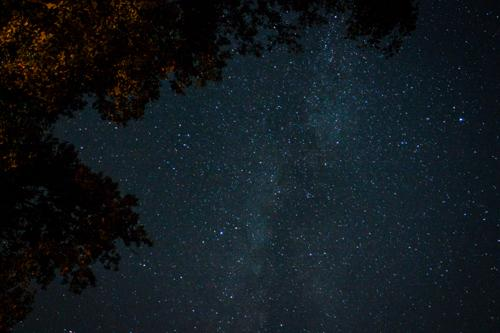

On the way to an annual family get-together hosted by the wonderful Sisinger’s at their lakeside cabin, my dad and I were discussing the differences between certain types of telescopes. Since there are so many different types of backyard telescopes out there, the question was posed as to why so many variations existed and what service each kind fulfilled. It more or less came down to the fact that some are designed for high-accuracy, long exposure astrophotography, and others more for visual observing. There are many different combinations of styles within each classification of backyard telescope – far too many to name here – but scopes used for astrophotography and scopes used for visual observing is what we boiled it down to.
But why are they different? Why not use the same kind for both? Of course you can, but you can get better results when the correct tools are utilized for each specific application. We got off on a tangent and a good analogy was raised for why someone would choose to do visual observing over photography, and vice versa: looking at an image of a galaxy and seeing the galaxy with your very own eyes is like the difference between listening to a record and seeing the concert live.
With astrophotography, stunning pictures can be produced – the kind you find in glossy magazines and computer desktop backgrounds. Brilliant reds and blues pop off the page. Individual stars can be picked out of a crowd of tens of thousands of its kin swirling around their pinwheel galaxies. But then you have visual observing which is virtually devoid of color. The contrast is gone and detail is practically nonexistent. Most things are reduced to mere pinpricks of light and barely visible grey smudges against a black background. So why do visual observing at all? Why waste the time?
Beyond the obvious financial reasons (astrophotography equipment gets expensive, fast!), I believe visual observing can lead to a more pure experience. I always tell people that their first telescope should be some binoculars and a good astronomy book. And I mean it! A surprising amount can be seen just with a simple pair of binoculars from your backyard. And a book lets you understand what it is you’re looking at. Amateur astronomy is 10% what you see, and 90% imagination. And your imagination is a very powerful thing. Think of it this way: why are books so much better than their movies? Because the book has much more time to describe the scenario and environment and then lets your imagination take over and fill in everything else. Looking through some binoculars at a fuzzy blob (when you know what it is you’re looking at) can transform it into one of the most beautiful, breathtaking things you’ve ever seen because of your imagination.

In addition, a more primal connection can be made between the observer and Nature when visual observing is utilized. It is undeniable the difference between seeing a picture of the Grand Canyon and actually being there. Seeing the Grand Teton mountain range with your own eyes is a much more enriching experience when compared to looking at a mere photograph. A recording of your favorite band is nice and has its benefits, but there’s nothing like being at the show and actually feeling bass reverberate in your chest. Looking at a picture of the Great Andromeda Galaxy captured by the Hubble Space Telescope in a National Geographic magazine can be awe-inspiring, but seeing it with your own eyes – even though it’s only a fuzzy blob in the eyepiece – and knowing that you’re looking at a genuine galaxy two and a half million light years away can border on a spiritual experience. Think about it, light from an entire galaxy, with billions of stars and probably even more planets, travelling for almost three million years, finally makes it to Earth just in time for your eye to catch those photons and register in your brain – that’s a humbling thing to think about.
Don’t get me wrong, astrophotography can be extremely rewarding in its own right, but dragging the old dobsonian out on a clear cool night and just swinging the scope around to wherever your heart leads you just reminds me of a simpler time; a time when folks hoed corn and felt the very dirt in their hands which sustained their life. Not like today where we’re completely cutoff from actual living, sitting behind our desks and changing one’s to zero’s and zero’s to one’s. When you step out in your backyard and look up at the night sky and see constellations telling their stories, you’re reunited with millenia of our ancestors who looked at those same stars and dreamed the same dreams. Visual astronomy dates back to a time before time. And the best part? It’s accessible to each and every one of us.
So I’d just like to say ‘thanks’ to the Sisinger’s who hosted another amazing family get-together down at Jackson Lake where the skies are dark, and the intimate connections with the Universe are doled out on a nightly basis...
(Both images in this post were captured next to a bonfire circled by friends and family sharing Life with each other on the banks of Jackson Lake in the end of September, 2014.)